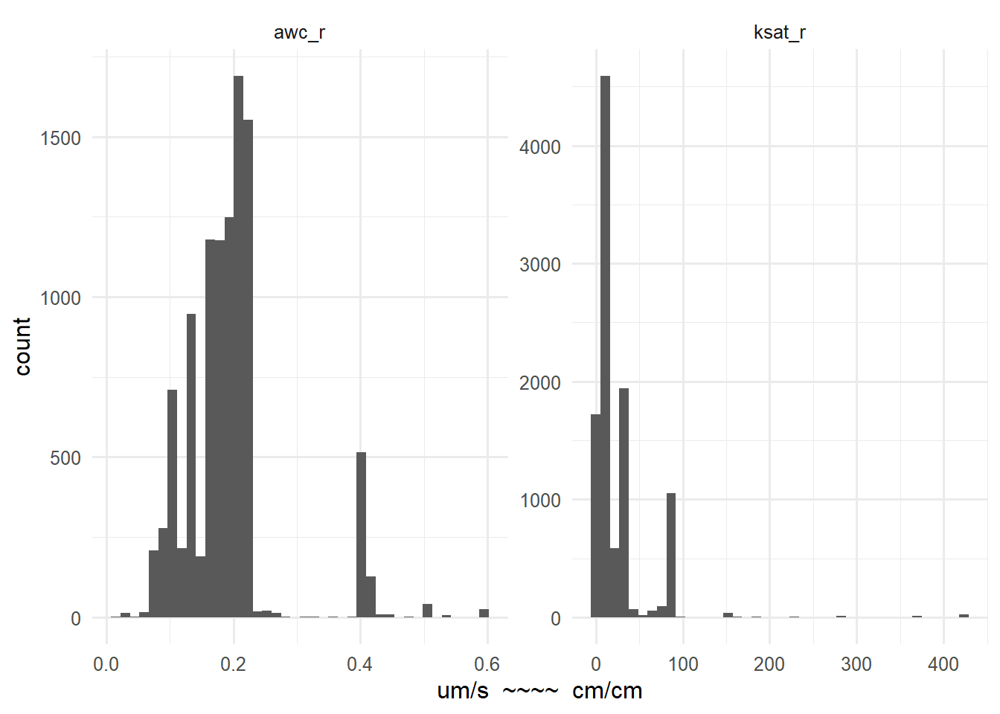

library(tidyverse)
library(glue)
library(ggtern)
dwide <- read_csv("./data/wide_slab_aggregated_soil_props_20220920.csv")
dlong <- read_csv("./data/long_slab_aggregated_soil_props_20220920.csv")
labunits <- read_csv("./data/ssurgo_col_names_labels_subset.csv")
varunits <- labunits$units %>% set_names(labunits$colname)5 Soil Property Exploratory Analysis
Goals:
- Explore distributions of soil properties
- Determine appropriate transformations
5.1 Soil Texture Classes
5.2 Clay, Sand, and Silt
plot_facet_hist(c("claytotal_r", "sandtotal_r", "silttotal_r")) +
xlab("Weight %")5.3 Carbonates
plot_facet_hist(c("claysizedcarb_r", "caco3_r")) +
xlab("Weight Percent")5.4 pH and EC
plot_facet_hist(c("ph1to1h2o_r",
"ec_r"),
nbins = 20) +
xlab("dS/m ~~~~ unitless")5.5 Organic Matter
plot_facet_hist(c("om_r")) +
xlab("% LOI")5.6 Bulk Density
plot_facet_hist(c("dbthirdbar_r")) +
xlab("g/cm3")5.7 CEC pH 7
plot_facet_hist(c("cec7_r")) +
xlab("meq/100g")5.8 Ksat and AWC
In Devine et al., they calculated AWC as a sum by soil component (so they multiplied the weighted average AWC by the depth to get a volume of water). Nic and I talked about this, and decided it’s not necessary. We can just use the AWC value from the database (the volume fraction), because we are always using the same depth (20cm). So multiplying by a constant wouldn’t change the distribution of values at all.
AWC column description: The amount of water that an increment of soil depth, inclusive of fragments, can store that is available to plants. AWC is expressed as a volume fraction, and is commonly estimated as the difference between the water contents at 1/10 or 1/3 bar (field capacity) and 15 bars (permanent wilting point) tension and adjusted for salinity, and fragments.
plot_facet_hist(c("ksat_r",
"awc_r")) +
xlab("um/s ~~~~ cm/cm")
5.9 Linear Extensibility and SAR
plot_facet_hist(c("lep_r",
"sar_r")) +
xlab("% ~~~~ unitless")5.10 Volume Coarse Fragments
plot_facet_hist(c("fragvol_r_sum")) +
xlab("Volume %")5.11 Erodibility Factor
plot_facet_hist(c("kwfact"),
nbins = 20) +
xlab("Unitless")